Developers Isaiah Snow
Nic Chambers
Carlos Nuñez
VR Chess:
We wanted to give players a new perspective on chess by utilizing VR. This application can be played with 2 players - one through the computer screen and one with a VR headset. The VR user is scaled down to match the size of the pieces and can pick them up with their hands to place them while the computer player clicks on the screen. Includes functional voice commands!


Ed Abshire
Solar System Simulation
This project is a culmination of the topics covered in CSS451. It is a dynamic simulation of our solar system navigatable by the user. The user can click and interact with planets and watch asteroid collide with them. Press space bar for a special surprise.
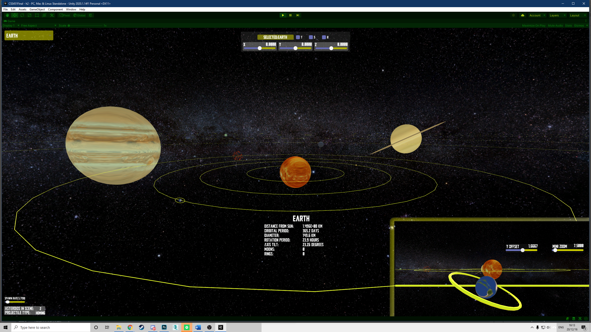 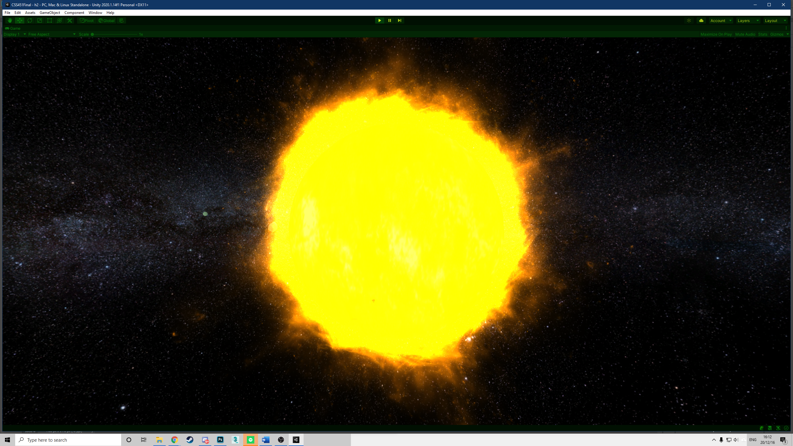 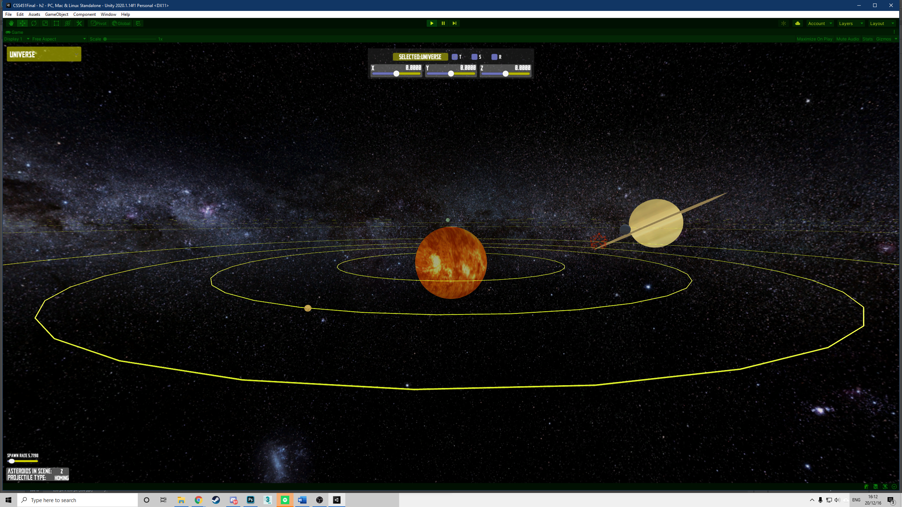Eunmin Lee
Wrecking Node
This application feature an armature that the user can rotate by means of on-screen controls and keyboard controls, in order to swing a wrecking ball hanging from a chain attached to the top-most part of the armature. The aim of the minigame is for the user to manipulate the armature so that the wrecking ball destroys all the structures in the scene.
Project proposal
Project
EXE
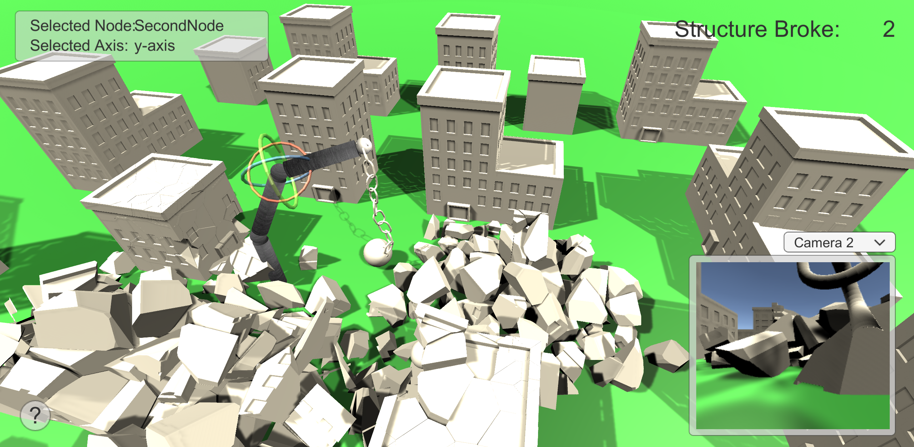
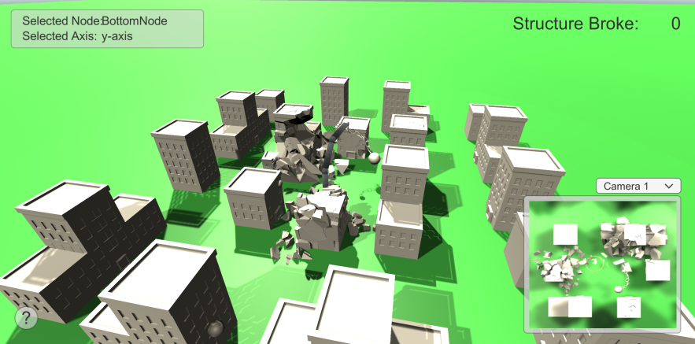
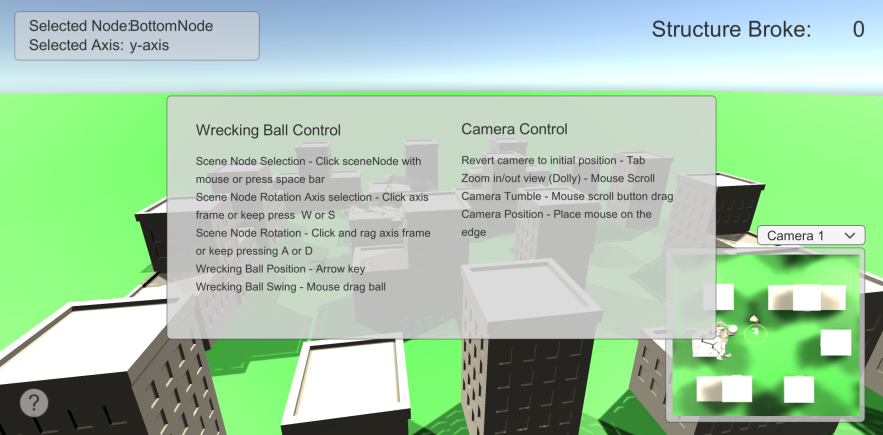
Developers Connor Browne
Parker Knoblich
Warehouse Simulator
Warehouse Simulator allows users to drive around a 3d warehouse to pick up and deliver pallets of goods from one location to another. Users can manipulate the front half of their forklift with their mouse by either tilting the arms or dragging/dropping the forks. To gain a better view of their surroundings, users can tumble and dolly their main camera. Furthermore, a flashing light on top of the forklift allows users to easily see where they are driving. To help the users beat the clock, the users have an option to enable velocity-based driving. If the user delivers all five pallets to their respective locations on time, they win!
Project proposal
Final Project EXE
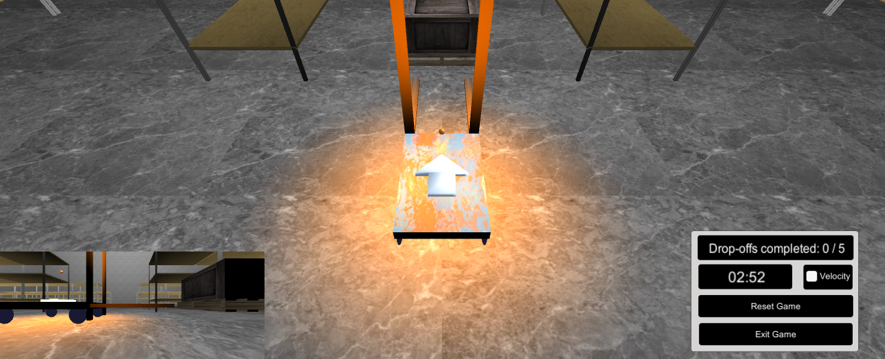
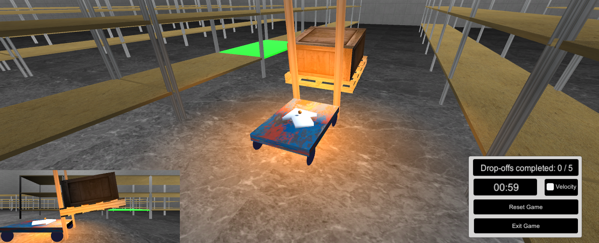
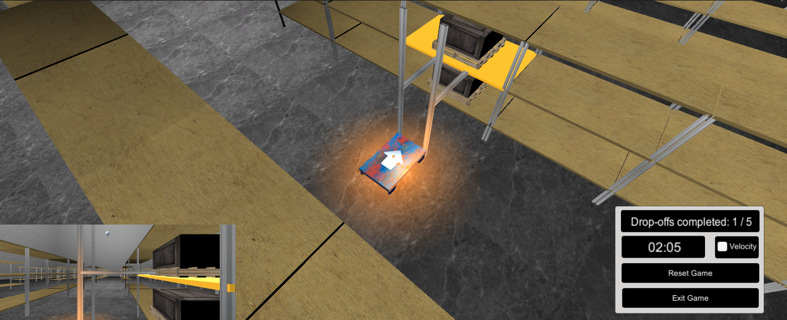
Developers Alex Nistor
Jacob Pierce
Holiday Golf
Holiday golf is a mini golf game that is playable with 2 players. The players alternate turns and the first player to score the ball in the hole with the least amount of strokes wins. The course is Christmas themed which includes obstacles such as Christmas trees, presents and a snowman. The game also includes Christmas lights around the course and is located somewhere in the snowy mountains. The obstacles are placed on a table for the players to move onto the course as they see fit before starting the game.
Project proposal Project Proposal Presentation Final Demo Presentation Final Project EXE
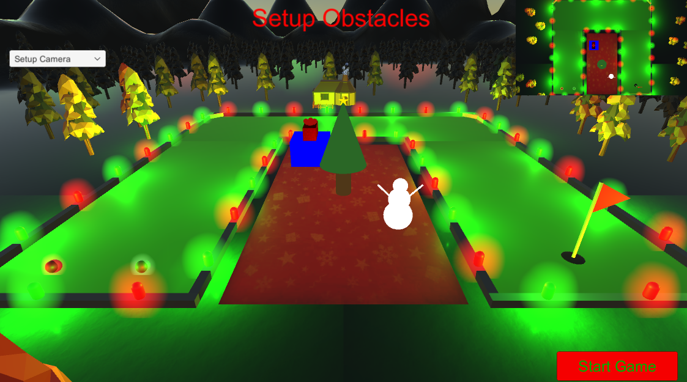 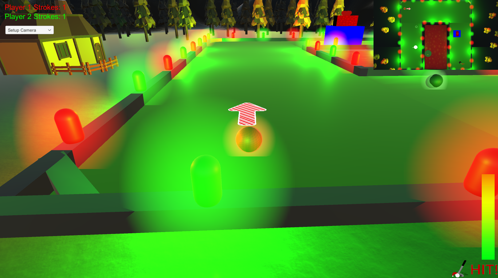 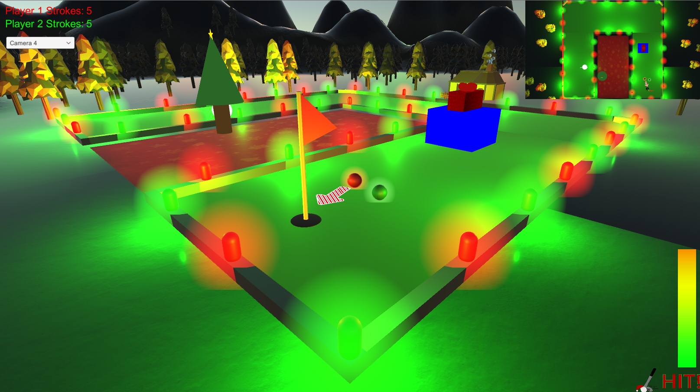From Unity Asset Store: White Smoke Particle System, Lowpoly Nature & Village Pack, Snowy Low-Poly Trees, 4 Snow Materials[High Quality], Snow Cliff Materials, Simple Gems Ultimate Animated

Developers: Nina Panganiban
Gabriel Oliver
TroubleShooting:
The app will be a controllable launcher to shoot balls into a hoop, scoring a goal. The launcher is made up of three SceneNodes: the base, the arm, and the head. Each part of the cannon can be transformed in different ways, depending on the part selected. When the player scores a goal, the hoop will be moved to a new position. The user can also control the hoop's position.
Project Proposal Final Demo WebGL EXE


Metal Texture (Accessed 12/15/2020)
Granite Texture (Accessed 12/15/2020)
Rusted Cast Iron Texture (Accessed 12/15/2020)
Jacob Chesnut
Two Mode Crane Game
Our application is a controllable crane game. There are two game modes the user can choose from, time mode and collectable mode. The time mode gives the user 60 seconds to pick up any objects, the different colors correspond to different amount of points. A high score is kept if the score after 60 seconds is better.
The collectable mode gives the user unlimited time to collect certain objects in the machine. This will be kept track from two boards next to the machine, a yellow dot will light up next to the acquired object
Controls: ALT + LMB to rotate around machine, ALT + ScrollWheel to zoom in/out
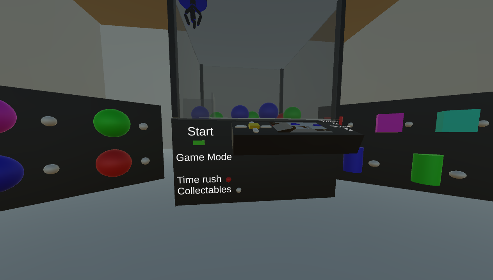


Jacob McHugh
Pinball:
To demonstrate the interactions between 3D objects and their surroundings through a fun pinball machine game. This game will include reflection of the ball, simulated gravity, lighting, shaders, textures (all of which make it appear like a more realistic pinball machine), intuitive cameras that give more insight to how the game is proceeding, and the user will be able to control the scene node paddles and ball launching mechanism through selecting and manipulating the objects.
Project proposal
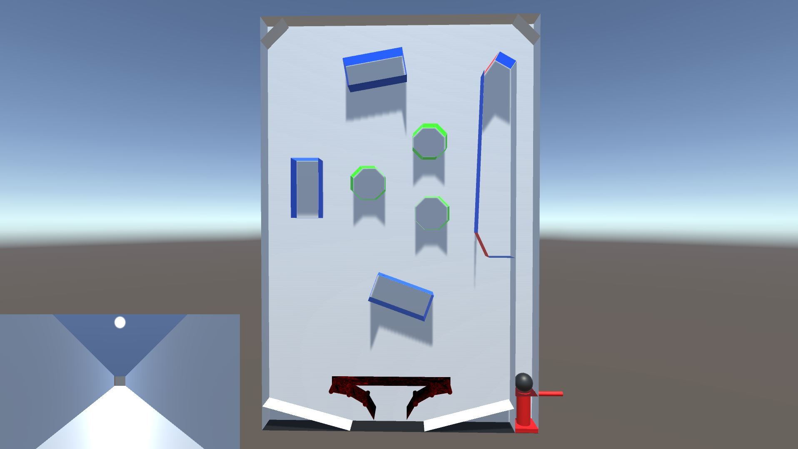
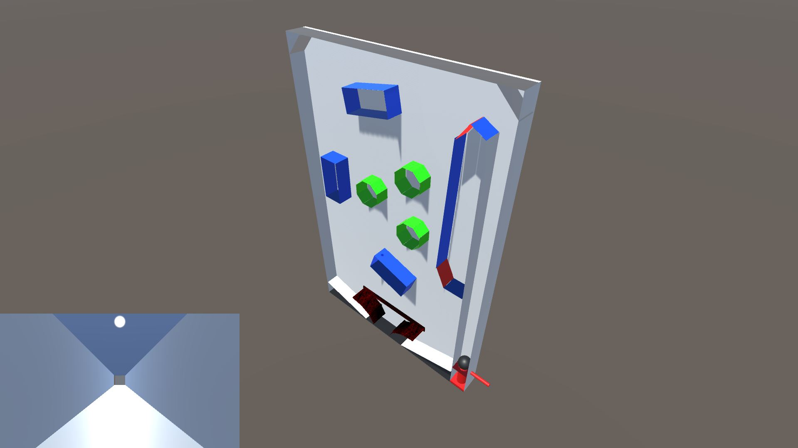
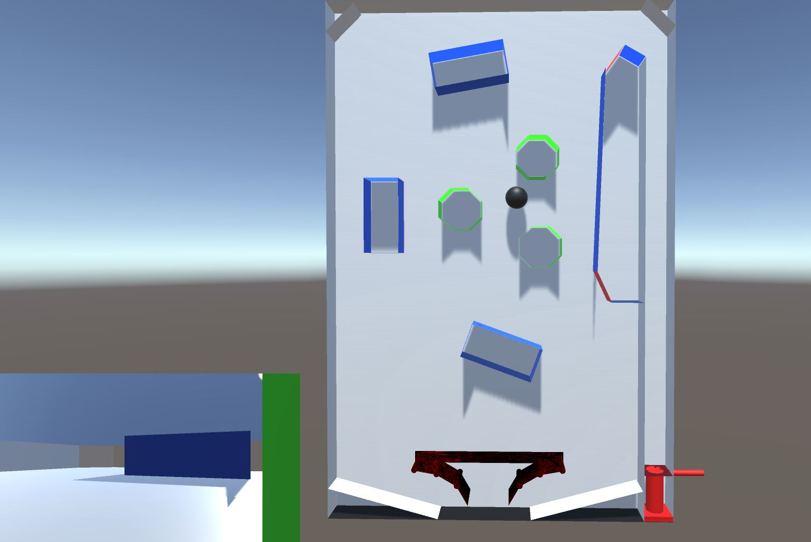